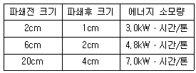
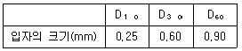
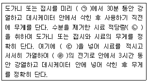
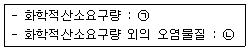

폐기물처리기사 (2018-09-15 기출문제)
1과목: 폐기물 개론
1. 폐기물 수거방법 중 수거효율이 가장 높은 방법은?
- 대형 쓰레기통 수거
- 문전식 수거
- 타종식 수거
- 적환식 수거
(정답률: 80%)

2. 관거를 이용한 공기수송에 관한 설명으로 틀린 것은?
- 공기의 동압에 의해 쓰레기를 수송한다.
- 고층주택밀집지역에 적합하다.
- 지하 매설로 수송관에서 발생되는 소음에 대한 방지시설이 필요 없다.
- 가압수송은 송풍기로 쓰레기를 불어서 수송하는 것으로 진공수송보다 수송거리를 길게 할 수 있다.
(정답률: 79%)
3. 발생 쓰레기 밀도 500kg/m3, 차량적재용량 6m3, 압축비 2.0, 발생량 1.1kg/인ㆍ일, 차량적재함 이용률 85%, 차량수 3대, 수거대상인구 15000명, 수거인부 5면의 조건에서 차량을 동시 운행할 때, 쓰레기 수거는 일주일에 최소 몇 회 이상 하여야 하는가?
- 4
- 6
- 8
- 10
(정답률: 56%)
4. 적환장에 관한 설명으로 옳지 않은 것은?
- 공중위생을 위하여 수거지로부터 먼 곳에 설치한다.
- 소형수거를 대형수송으로 연결해주는 장치이다.
- 적환장에서 재생 가능한 물질의 선별을 고려하도록 한다.
- 간선도로에 쉽게 연결될 수 있는 곳에 설치한다.
(정답률: 82%)
5. 2차 파쇄를 위해 6cm의 폐기물을 1cm로 파쇄하는데 소요되는 에너지(kWㆍhr/ton)는? (단, kick의 법칙을 이용, 동일한 파쇄기를 이용하여 10cm의 폐기물을 2cm로 파쇄하는데 에너지가 50kWㆍhr/ton 소모됨)
- 55.66
- 57.66
- 59.66
- 61.66
(정답률: 69%)
6. 전과정평가(LCA)를 구성하는 4부분 중, 조사분석과정에서 확정된 자원요구 및 환경부하에 대한 영향을 평가하는 기술적, 정량적, 정성적 과정인 것은?
- impact analysis
- initiation analysis
- inventory analysis
- improvement analysis
(정답률: 76%)
7. 폐기물 발생량 예측 시 고려되는 직접적인 인자로 가장 거리가 먼 것은?
- 인구
- GNP
- 쓰레기통 위치
- 자원회수량
(정답률: 72%)
8. 쓰레기 수거차 5대가 각각 10m3의 쓰레기를 운반하였다. 쓰레기의 밀도를 0.5ton/m3이라고 하면 운반된 쓰레기의 총 중량(ton)은?
- 5
- 15
- 25
- 35
(정답률: 86%)
9. 쓰레기의 발생량 예측에 적용하는 방법이 아닌 것은?
- 경향법
- 물질수지법
- 동적모사 모델
- 다중회귀 모델
(정답률: 89%)
10. 쓰레기의 겉보기 비중과 관계 없는 것은?
- 밀도
- 진비중
- 시료중량/용기부피
- ton/m3
(정답률: 80%)
11. 청소상태의 평가방법에 관한 설명으로 옳지 않은 것은?
- 지역사회 효과지수는 가로 청소상태의 문제점이 관찰되는 경우 각 10점씩 감점한다.
- 지역사회 효과지수에서 가로 청결상태의 scale은 1~10로 정하여 각각 10점 범위로 한다.
- 사용자 만족도 지수는 서비스를 받는 서비스를 받는 사람들의 만족도를 설문조사하여 계산되며 설문문항은 6개로 구성되어 있다.
- 사용자 만족도 설문지 문항의 총점은 100점이다.
(정답률: 71%)
12. 와전류선별기에 관한 설명으로 옳지 않은 것은?
- 비철금속의 분리, 회수에 이용된다.
- 자력선을 도체가 스칠 때에 진행방향과 직각방향으로 힘이 작용하는 것을 이용해서 분리한다.
- 연속적으로 변화하는 자장 속에 비자성이며 전기전도성이 좋은 금속을 넣어 분리시킨다.
- 완전류 선별기는 자기드럼식, 자기벨트식, 자기전도식으로 대별된다.
(정답률: 63%)
13. 쓰레기의 발생량 조사 방법이 아닌 것은?
- 직접계근법
- 경향법
- 적재차량계수 분석법
- 물질수지법
(정답률: 87%)
14. 파쇄시설의 에너지 소모량은 평균크기 비의 상용로그값에 비례한다. 에너지 소모량에 대한 자료가 다음과 같을 때 평균크기가 10cm인 혼합도시폐기물을 1cm로 파쇄 하는데 필요한 에너지 소모율(kWㆍ시간/톤)은? (단, kick 법칙 적용)

- 7.82
- 8.61
- 9.97
- 12.83
(정답률: 67%)
15. 슬러지 수분 중 가장 용이하게 분리할 수 있는 수분의 형태로 옳은 것은?
- 모관결합수
- 세포수
- 표면부착수
- 내부수
(정답률: 72%)
16. 수거대상 인구가 10000명인 도시에서 발생되는 폐기물의 밀도는 0.5ton/m3이고, 하루 폐기물 수거를 위해 차량적재 용량이 10m3인 차량 10대가 사용된다면 1일 1인당 폐기물 발생량(kg/인ㆍ일)은? (단, 차량은 1일 1회 운행 기준)
- 2
- 3
- 4
- 5
(정답률: 73%)
17. 함수율 95% 분뇨의 유기탄소량이 TS의 35%, 총질소량은 TS의 10%이다. 이와 혼합할 함수율 20%인 볏짚의 유기탄소량이 TS의 80%이고, 총질소량이 TS의 4%라면 분뇨와 볏짚을 1:1로 혼합했을 때 C/N비는?
- 17.8
- 28.3
- 31.3
- 41.3
(정답률: 60%)
18. 폐기물의 성분을 조사한 결과 플라스틱의 함량이 30%(중량비)로 나타났다. 이 폐기물의 밀도가 300kg/m3이라면 10m3 중에 함유된 플라스틱의 양(kg)은?
- 300
- 600
- 900
- 1000
(정답률: 83%)
19. 플라스틱 폐기물 중 할로겐 화합물을 함유하고 있는 것은?
- 폴리에틸렌
- 멜라민수지
- 폴리염화비닐
- 폴리아크릴로니트릴
(정답률: 82%)
20. 사업장내에서 폐기물의 발생량을 억제하기 위한 방안으로 가장 거리가 먼 것은?
- 자원, 원료의 선택
- 제조, 가공공정의 선택
- 제품 사용연수의 감안
- 최종처분의 체계화
(정답률: 72%)
2과목: 폐기물 처리 기술
21. 유기성폐기물의 퇴비화과정(초기단계-고온단계-숙성단계) 중 고온단계에서 주된 역할을 담당하는 미생물은?
- 전반기 : Pseudomnas, 후반기 : Bacillus
- 전반기 : Thermoactinomyces, 후반기 : Enterbactor
- 전반기 : Enterbactor, 후반기 : Pseudomonas
- 전반기 : Bacillus, 후반기 : Thermoactinonmyces
(정답률: 74%)
22. 매립지 중간복토에 관한 설명으로 틀린 것은?
- 복토는 메탄가스가 외부로 나가는 것을 방지한다.
- 폐기물이 바람에 날리는 것을 방지한다.
- 복토재로는 모래나 점토질을 사용하는 것이 좋다.
- 지반의 안정과 강도를 증가시킨다.
(정답률: 70%)
23. 매립가스의 강제포집방식 중 수직포집방식의 장점과 거리가 먼 것은?
- 폐기물 부등침하에 영향이 적음
- 파손된 포집정의 교환이나 추가시공이 가능함
- 포집공의 압력 조절이 가능함
- 포집효율이 비교적 낮음
(정답률: 52%)
24. 합성차수막 중 CR의 장ㆍ단점에 관한 설명으로 가장 거리가 먼 것은?
- 가격이 비싸다.
- 마모 및 기계적 충격에 약하다.
- 접합이 용이하지 못하다.
- 대부분의 화학물질에 대한 저항성이 높다.
(정답률: 61%)
25. 고형폐기물을 매립 처리할 때 C6H12O6 성분 1톤(ton)의 폐기물이 혐기성 분해를 한다면 이론적 메탄가스 발생량(L)은? (단, 메탄가스 밀도 : 0.7167kg/L)
- 약 280
- 약 370
- 약 450
- 약 560
(정답률: 66%)
26. 일반적으로 C/N비가 가장 높은 것은?
- 신문지
- 톱밥
- 잔디
- 낙엽
(정답률: 54%)
27. 퇴비화 대상 유기물질의 화학식이 C99H148O59N 이라고 하면, 이 유기물질의 C/N비는?
- 64.9
- 84.9
- 104.9
- 124.9
(정답률: 75%)
28. 매립지 바닥에 복토가 충분할 때 사용하는 내륙매립방법은?
- 계곡매립법
- 지역법
- 경사법
- 도랑법
(정답률: 78%)
29. 폐기물 건조기 중 기류건조기의 특징과 거리가 먼 것은?
- 건조시간이 짧다.
- 고온의 건조가스 사용이 가능하다.
- 가연성 재료에서는 분진폭발 및 화재의 위험성이 있다.
- 작은 입경의 폐기물 건조에는 적합하지 않다.
(정답률: 56%)
30. 분뇨저장탱크 내의 악취발생 공간 체적이 40m3이고, 이를 시간당 5차례 교환하고자 한다. 발생된 악취공기를 퇴비 여과방식을 채택하여 투과속도 20m/hr로 처리하고자 할 때 필요한 퇴비여과상의 면적(m2)은?
- 6
- 8
- 10
- 12
(정답률: 73%)
31. 관리형 폐기물매립지에서 발생하는 침출수의 주된 발생원은?
- 주위의 지하수로부터 유입되는 물
- 주변으로부터의 유입지표수(Pun-on)
- 강우에 의하여 상부로부터 유입되는 물
- 폐기물 자체의 수분 및 분해에 의하여 생성되는 물
(정답률: 75%)
32. 폐기물 매립 시 사용되는 인공복토재의 조건으로 옳지 않는 것은?
- 연소가 잘 되지 않아야 한다.
- 살포가 용이하여야 한다.
- 투수계수가 높아야 한다.
- 미관상 좋아야 한다.
(정답률: 78%)
33. 열분해와 운전인자에 대한 설명으로 틀린 것은?
- 열분해는 무산소상태에서 일어나는 반응이며 필요한 에너지를 외부에서 공급해 주어야 한다.
- 열분해가스 중 CO, H2, CH4 등의 생성율은 열공급속도가 커짐에 따라 증가한다.
- 열분해 반응에서는 열공급속도가 커짐에 따라 유기성 액체와 수분, 그리고 Char의 생성량은 감소한다.
- 산소가 일부 존재하는 조건에서 열분해가 진행되면 CO2의 생성량이 최대가 된다.
(정답률: 45%)
34. 폐기물처리시설 설치의 환경성조사서에 포함되어야 할 사항이 아닌 것은?
- 지역의 폐기물 처리에 관한 사항
- 처리시설입지에 관한 사항
- 처리시설에 관한 사항
- 소요사업비 및 재원조달계획
(정답률: 60%)
35. Soil Washing 기법을 적용하기 위하여 토양의 입도분포를 조사한 결과가 다음과 같을 경우, 유효입경(mm)과 곡률계수는? (단, D10, D30, D60는 각각 통과백분율 10%, 30%, 60%에 해당하는 입자 직경이다.)

- 유효입경 : 0.25, 곡률계수 : 1.6
- 유효입경 : 3.60, 곡률계수 : 1.6
- 유효입경 : 0.25, 곡률계수 : 2.6
- 유효입경 : 3.60, 곡률계수 : 2.6
(정답률: 67%)
36. 호기성 소화공법이 혐기성 소화공법에 비하여 갖고 있는 장점이라 할 수 없는 것은?
- 반응시간이 짧아 시설비가 저렴할 수 있다.
- 운전이 용이하고 악취발생이 적다.
- 생산된 슬러지의 탈수성이 우수하다.
- 반응조의 가온이 불필요하다.
(정답률: 65%)
37. 분뇨처리 프로세스 중 습식 고온고압 산화처리 방식에 대한 설명 중 옳지 않은 것은?
- 일반적으로 70기압과 210℃로 가동된다.
- 처리시설의 수명이 짧다.
- 완전멸균이 되고, 질소 등 영양소의 제거율이 높다.
- 탈수성이 좋고 고액분리가 잘된다.
(정답률: 38%)
38. 폐기물의 고화처리방법 중 피막형성법의 장점으로 옳은 것은?
- 화재 위험성이 없다.
- 혼합률이 높다.
- 에너지 소비가 적다.
- 침출성이 낮다.
(정답률: 67%)
39. 위생매립의 장점이 아닌 것은?
- 타 방법과 비교하여 초기 투자비용이 높다.
- 부지확보가 가능할 경우 가장 경제적인 방법이다.
- 거의 모든 종류의 폐기물처분이 가능하다.
- 사후부지는 공원, 운동장 등으로 이용될 수 있다.
(정답률: 63%)
40. 다음 조건으로 분뇨을 소화시킨 후 소화조 내 전체에 대한 함수율(%)은? (단, 생분뇨의 함수율 = 95%, 분뇨 내 고형물 중 유기물량 =60ㅃ%, 소화 시 유기물 감량=60%(가스화), 비중 = 1.0, 처리방식은 batch식, 탈리액을 인출하지 않음)
- 95.6
- 96.8
- 97.5
- 98.6
(정답률: 47%)
3과목: 폐기물 소각 및 열회수
41. 호상부하율(연소량/화상면적)에 대한 설명으로 옳지 않은 것은?
- 화상부하율을 크게 하기 위해서는 연소량을 늘리거나 화상면적을 줄인다.
- 화상부하율이 너무 크면 로내 온도가 저하하기도 한다.
- 화상부하율이 적어질수록 화상면적이 축소되어 compact화 된다.
- 화상부하율이 너무 커지면 불완전연소의 문제를 야기 시킨다.
(정답률: 61%)
42. 폐기물 처리방법 중, 소각공정에 대한 열분해 공정의 비교성명으로 옳은 것은?(오류 신고가 접수된 문제입니다. 반드시 정답과 해설을 확인하시기 바랍니다.)
- 열분해공정은 소각공정에 비해 배기가스량이 많다.
- 열분해공정은 소각공정에 비해 황 및 중금속이 회분 속에 고정되는 비율이 많다.
- 열분해공정은 소각공정에 비해 질소산화물 발생량이 적다.
- 열분해공정은 소각공정에 비해 산화성 분위기를 유지한다.
(정답률: 60%)
43. 폐플라스틱 소각처리 시 발생되는 문제점 중 옳은 것은?
- 플라스틱 용융점이 높아 화격자나 구동장치 등에 고장을 일으킨다.
- 플라스틱 발열량은 보통 3000~5000 kcal/kg 범위로 도시폐기물 발열량의 2배 정도이다.
- 플라스틱 자체의 열전도율이 낮아 온도분포가 불균일하다.
- PVC를 연소 시 HCN이 다량 발생되어 시설의 부식을 일으킨다.
(정답률: 48%)
44. 유동상식 소각로의 장ㆍ단점에 대한 설명으로 틀린 것은?
- 반응시간이 빨라 소각시간이 짧다.(로부하율이 높다.)
- 연소효율이 높아 미연소분 배출이 적고 2차 연소실이 불필요하다.
- 기계적 구동부분이 많아 고장율이 높다.
- 상으로부터 찌꺼기의 분리가 어려우며 운전비 특히 동력비가 높다.
(정답률: 67%)
45. 폐기물 소각에 따른 문제점은 지구온난화가스의 형성이다. 다음 배가스 성분 중 온실가스는?
- CO2
- NOx
- SO2
- HCI
(정답률: 81%)
46. 준연속 연소식 소각로의 가동시간으로 적당한 설계조건은?
- 8시간
- 12시간
- 16시간
- 18시간
(정답률: 63%)
47. 폐기물소각 시 발생되는 질소산화물 저감 및 처리방법이 아닌 것은?
- 알칼리 흡수법
- 산화 흡수법
- 접촉 환원법
- 디메틸아닐린법
(정답률: 54%)
48. 폐기물 소각로에서 배출되는 연소공기의 조성이 아래와 같을 때 연소가스의 평균분자량은? (단, CO2=13.0%, O2=8%, H2O=10%, N2=69%)
- 27.4
- 28.4
- 28.8
- 29.4
(정답률: 56%)
49. 소각 과정에 대한 설명으로 틀린 것은?
- 수분이 적을수록 착화도달 시간이 적다.
- 회분이 많을수록 발열량이 낮아진다.
- 폐기물의 건조는 자유건조→항율건조→감율건조 순으로 이루어진다.
- 발열량이 작을수록 연소온도가 높아진다.
(정답률: 53%)
50. 수소 22.0%, 수분 0.7%인 중유의 고위발열량이 12600kcal/kg일 때 저위발열량(kcal/kg)은?
- 11408
- 17245
- 19328
- 20314
(정답률: 67%)
51. 아세틸렌(C2H2) 100kg을 완전 연소시킬 때 필요한 이론적 산소요규량(kg)은?
- 123
- 214
- 308
- 415
(정답률: 64%)
52. 에틸렌(C2H4)의 고위발열량이 15280kcal/Sm이라면 저위발열량(kcal/Sm)은?
- 14920
- 14800
- 14680
- 14320
(정답률: 69%)
53. 화격자 연소기(Grate or Stoker)에 대한 설명으로 옳은 것은?
- 휘발성분이 많고 열분해 하기 쉬운 물질을 소각할 경우 상향식 연소방식을 쓴다.
- 이동식 화격자는 주입폐기물을 잘 운반시키거나 뒤집지는 못하는 문제점이 있다.
- 수분이 많거나 플라스틱과 같이 열에 쉽게 용해되는 물질에 의한 화격자 막힘의 우려가 없다.
- 체류시간이 짧고 교반력이 강하여 국부가열이 발생할 우려가 있다.
(정답률: 40%)
54. 폐기물 소각, 매립 설계과정에서 중요한 인자로 작용하고 있는 강열감량(lgnition Loss)에 대한 설명으로 틀린 것은?
- 소각로의 운전상태를 파악할 수 있는 중요한 지표
- 소각로의 종류, 처리용량에 따른 화격자의 면적을 선정하는 데 중요자료
- 소각잔사 중 가연분을 중량 백분율로 나타낸 수치
- 폐기물의 매립처분에 있어서 중요한 지표
(정답률: 62%)
55. 표준상태에서 배기가스 내에 존재하는 Co2농도가 0.01%일 때 이것은 몇 mg/m3인가?
- 146
- 196
- 266
- 296
(정답률: 60%)
56. 스크러버는 액적 또는 액막을 형성시켜 함진가스와의 접촉에 의해 오염물질을 제거시키는 장치이다. 다음 중 스크러버의 장점 및 단점에 대한 설명이 아닌 것은?
- 2차적 분진처리가 불필요하다.
- 냉한기에 세정수의 동결에 의한 대책 수립이 필요하다.
- 좁은 공간에도 설치가 필요하다.
- 부식성가스의 흡수로 재료 부식이 방지된다.
(정답률: 46%)
57. 화격자 연소기의 장ㆍ단점에 대한 설명으로 옳지 않은 것은?
- 연속적인 소각과 배출이 가능하다.
- 수분이 많거나 열에 쉽게 용해되는 물질의 소각에 주로 적용된다.
- 체류시간이 길고 교반력이 약하여 국부가열의 염려가 있다.
- 고온 중에서 기계적으로 구동하기 때문에 금속부의 마모손실이 심하다.
(정답률: 55%)
58. 폐기물 소각로의 화상부하율이 600kg/m2hr, 하루에 소각할 폐기물 양이 200ton일 경우 요구되는 화상면적(m2)은? (단, 소각로 전연속식, 가동시간=24hr일)
- 6.91
- 8.54
- 10.27
- 13.89
(정답률: 65%)
59. 중유에 대한 설명으로 옳지 않은 것은?
- 중유의 탄수소비(C/H)가 증가하면 비열은 감소한다.
- 중유의 유동점은 일정 시험기에서 온도와 유동상태를 관찰하여 측정하며, 고온에서 취시 난이도를 표시하는 척도이다.
- 비중이 큰 중유는 일반적으로 발열량이 낮고 비중이 작을수록 연소성이 양호하다.
- 잔류탄소가 많은 중유는 일반적으로 점도가 높으며, 일반적으로 중질유일수록 잔류탄소가 많다.
(정답률: 43%)
60. 도시폐기물의 중량 조성이 C 65%, H 6%, O 8%, S 3%, 수분 3%였으며, 각 원소의 단위 질량당 열량은 C 8100 kca/kg, H 34000 kcal/kg, S2200 kca/kg 이었다. 이 도시폐기물의 저위발열량(HI kcal/kg)은? (단, 연소조건은 상온으로 보고 상온상태의 물의 증발잠열은 600kcal/kg으로 함)
- 5473
- 6689
- 7135
- 8288
(정답률: 62%)
4과목: 폐기물 공정시험기준(방법)
61. 자외선/가시선 분광광도계의 광원부의 광원 중 자외부의 공원으로 주로 사용하는 것은?
- 속빈음극램프
- 텅스텐램프
- 광전도도관
- 중수소 방전관
(정답률: 70%)
62. 폐기물 시료의 용출 시험 방법에 대한 설명으로 틀린 것은?
- 지정폐기물의 판정이나 매립방법을 결정하기 위한 시험에 적용한다.
- 시료 100g 이상을 정밀히 달아 정제수에 염산을 넣어 pH 4.5~5.3 정도로 조절한 용매와 1:5의 비율로 혼합한다.
- 진탕여과한 액을 검액으로 사용하거나 여과가 어려운 경우 원심분리기를 이용한다.
- 용출시험 결과는 수분함량 보정을 위해 함수율 85% 이상인 시료에 한하여 [15/(100- 시료의 함수율(%)))]을 곱하여 계산된 값으로 한다.
(정답률: 75%)
63. 원자흡수분광광도법에서 일어나는 분광학적 간섭에 해당하는 것은?
- 불꽃 중에서 원자가 이온화하는 경우
- 시료용액의 점성이나 표면장력 등에 의하여 일어나는 경우
- 분석에 사용하는 스펙트럼선이 다른 인접선과 완전히 분리되지 않는 경우
- 공존물질과 작용하여 해리하기 어려운 화합물이 생성되어 흡광에 관계하는 기저상태의 원자수가 감소하는 경우
(정답률: 61%)
64. 시료의 조제방법에 대한 내용으로 틀린 것은?
- 폐기물 중 입경이 5mm미만인 것은 그대로, 입경이 5mm이상인 것은 분쇄하여 입경이 0.5~5mm로 한다.
- 구획법 - 20개의 각 부분에서 균등량 취하여 혼합하여 하나의 시료로 한다.
- 교호삽법 - 일정량을 장방형으로 도포하고 균등량씩 취하여 하나의 시료로 한다.
- 원추 4분법 - 원추의 꼭지를 눌러 평평하게 한 후 균등량씩 취하여 하나의 시료로 한다.
(정답률: 56%)
65. 강열감량 및 유기물 함량 분석에 관한 내용으로 ()에 알맞은 것은?

- ㉠ 550±25)℃
- ㉡ 10g 이상
- ㉢ 25% 황산암모늄용액
- ㉣ (600±25)℃
(정답률: 65%)
66. 석면의 종류 중 백석면의 형태와 색상에 관한 내용으로 가장 거리가 먼 것은?
- 곧은 물결 모양의 섬유
- 다발에 끝은 분산
- 다색성
- 가열되면 무색~밝은 갈색
(정답률: 75%)
67. 노말 헥산 추출물질을 측정하기 위해 시료 30g을 사용하여 공정시험기준에 따라 실험하였다. 실험전후의 증발용기의 무게 차는 0.0176g이고 바탕 실험전후의 증발용기의 무게차가 0.0011g 이었다면 이를 적용하여 계산된 노말헥산 추출물질(%)은?
- 0.035
- 0.⑤5
- 0.075
- 0.095
(정답률: 64%)
68. 기체 중의 농도는 표준상태로 환산 표시한다. 이 때 표준상태를 바르게 표현한 것은?
- 25℃, 1기압
- 25℃, 0기압
- 0℃, 1기압
- 0℃, 0기압
(정답률: 78%)
69. 0.1N-AgNO3 규정액 1mL는 몇 mg의 NaCl과 반응하는가? (단, 분자량 : AgNO3=169.87, Nacl=58.5)
- 0.585
- 5.85
- 58.5
- 585
(정답률: 57%)
70. 음식물 폐기물의 수분을 측정하기 위해 실험하였더니 다음과 같은 결과를 얻었을 때 수분(%)은? (단, 건조 전 시료의 무게=50g, 증발접시의 무게=7.25g, 증발접시 및 시료의 건조 후 무게=15.75g)
- 87%
- 83%
- 78%
- 74%
(정답률: 69%)
71. ICP(유도결합플라스마-원자발광분광법)의 특징을 설명한 것으로 틀린 것은?
- 6000~8000℃에서 여기된 원자가 바닥 상태에서 방출하는 발광선 및 발광광도를 측정하여 정성 및 정량 분석하는 방법이다.
- 아르곤가스를 플라즈마 가스로 사용하여 수정발진식 고주파발생기로부터 27.13MHz 영역에서 유도코일에 의하여 플라즈마를 발생시킨다.
- 토치는 3중으로 된 석영관이 이용되며 제일 안쪽이 운반가스, 중간이 보조가스 그리고 제일 바깥쪽이 냉각가스과 도입된다.
- ICP구조는 중심에 저온, 저전자밀도의 영역이 도너츠 형태로 형성된다.
(정답률: 54%)
72. 자외선/가시선 분광법으로 크롬을 정량할 때 KMNO4를 사용하는 목적은?
- 시료 중의 총 크롬을 6가크롬으로 하기 위해서다.
- 시료 중의 총 크롬을 3가크롬으로 하기 위해서다.
- 시료 중의 총 크롬을 이온화하기 위해서다.
- 다이페닐카바자이드와 반응을 최적화하기 위해서다.
(정답률: 77%)
73. 대상 폐기물의 양이 1100톤인 경우 현장 시료의 최소 수(개)는?
- 40
- 50
- 60
- 80
(정답률: 60%)
74. 기체크로마토그래피법에 의한 유기인 정량에 관한 설명이 가장 부적합한 것은?
- 검출기는 수소염 이온화 검출기 또는 질소ㆍ인 검출기(NPD)를 사용한다.
- 운반기체는 질소 또는 헬륨을 사용한다.
- 시료전처리를 위한 추출용매로는 주로 노말헥산을 사용한다.
- 방해물질을 함유되지 않은 시료의 경우는 정제 조작을 생략할 수 있다.
(정답률: 64%)
75. 총칙에서 규정하고 있는 내용으로 틀린 것은?
- 표준온도는 0℃, 찬 곳은 1~15℃, 열수는 약 100℃, 온수는 50~60℃를 말한다.
- “약”이라 함은 기재된 양에 대하여 ±10% 이상의 차가 있어서는 안된다.
- 무게를 “정확히 단다”라 함은 규정된 수치의 무게를 0.1mg까지 다는 것을 말한다.
- “감압 또는 진공”이라 함은 따로 규정이 없는 한 15mmHg 이하를 뜻한다.
(정답률: 65%)
76. 원자흡수분광광도계에서 해리하기 어려운 내화성 산화물을 만들기 쉬운 원소의 분석에 적당한 불꽃은?
- 아세틸렌-공기
- 프로판-공기
- 아세틸렌-이산화질소
- 수소-공기
(정답률: 59%)
77. 자외선/가시선 분광법에 의한 시안 시험법에 대한 옳은 설명은?
- 염소이온을 제거하기 위하여 황산을 첨가한다.
- 시안측정용 시료를 보관할 경우 황산을 넣어서 pH2로 만든다.
- 클로라민-T용액 및 피리딘ㆍ피라졸론혼합용액은 사용할 때 조제한다.
- 클로라민-T를 첨가하는 목적은 중금속을 제거하기 위해서이다.
(정답률: 60%)
78. 기체크로마토그래피에서 일반적으로 전자포획형 검출기에서 사용하는 운반가스는?
- 순도 99.9% 이상의 수소나 헬륨
- 수누도 99.9% 이상의 질소 또는 헬륨
- 순도 99.999% 이상의 질소 또는 헬륨
- 순도 99.999% 이상의 수소 또는 헬륨
(정답률: 75%)
79. 휘발선 저급염소화 탄화수소류 정량을 위해 사용하는 기체크로마토그래프의 검출기로 가장 알맞은 것은?
- 열전도도 검출기(TCD)
- 불꽃이온화 검출기(FID)
- 불꽃광도 검출기(FPD)
- 전해전도 검출기(HECD)
(정답률: 39%)
80. 다음 완충용액 중 pH 4.0 부근에서 조제되는 것은?
- 수산염 표준액
- 아세트산염 표준액
- 인산염 표준액
- 붕산염 표준액
(정답률: 45%)
5과목: 폐기물 관계 법규
81. 폐기물처리업 중 폐기물중간처분업, 폐기물최종처분업 및 폐기물종합처분업의 변경허가를 받아야 하는 중요사항과 가장 거리가 먼 것은?
- 운반차량(임시차량 제외) 주차장 소재지 변경
- 처분대상 폐기물의 변경
- 매립시설의 제방의 중ㆍ개축
- 폐기물 처분시설의 신설
(정답률: 65%)
82. 폐기물처리시설의 사후관리업무를 대행할 수 있는 자는?
- 시ㆍ도 보건환경연구원
- 국립환경연구원
- 한국환경공단
- 지방환경관리청
(정답률: 78%)
83. 동물성 잔재물과 의료폐기물 중 조직물류 폐기물 등 부패나 변질의 우려가 있는 폐기물인 경우 처리명령 대상이 되는 조업중단 기간은?
- 5일
- 10일
- 15일
- 30일
(정답률: 59%)
84. 폐기물 처리업의 업종 구분과 영업내용의 범위를 벗어나는 영업을 한 자에 대한 벌칙기준으로 옳은 것은?
- 1년 이하의 징역 또는 5백만원 이하의 벌금
- 1년 이하의 징역 또는 1 만원 이하의 벌금
- 2년 이하의 징역 또는 1천만원 이하의 벌금
- 2년 이하의 징역 또는 2천만원 이하의 벌금
(정답률: 69%)
85. 폐기물처리시설의 종류인 재활용시설 중 기계적 재활용시설이 아닌 것은?
- 연료화시설
- 고형화ㆍ고화시설
- 세척시설(철도용 폐목재 침목을 재활용하는 경우로 한정한다.)
- 절단시설(동력 10마력 이상인 시설로 한정한다.)
(정답률: 54%)
86. 폐기물관리법 벌칙 중에서 5년 이하의 징역이나 5천만원 이하의 벌금에 처할 수 있는 경우가 아닌 자는?
- 허가를 받지 아니하고 폐기물처리업을 한 자
- 승인을 받지 아니하고 폐기물처리시설을 설치한 자
- 대행계약을 체결하지 아니하고 종량제 봉투 등을 제작ㆍ유통한 자
- 거짓이나 그 밖의 부정한 방법으로 폐기물처리업의 허가를 받은 자
(정답률: 40%)
87. 지정폐기물배출자는 그의 사업장에서 발생되는 지정폐기물 중 폐산, 폐알칼리를 최대 몇 일 까지 보관할 수 있는가? (단, 보관개시일부터)
- 120일
- 90일
- 60일
- 45일
(정답률: 51%)
88. 폐기물 처리시설을 설치하고자 하는 자는 폐기물 처분시설 또는 재활용시설 설치승인 신청서를 누구에게 제출하여야 하는가?
- 환경부장관 또는 지방환경관서의 장
- 시ㆍ도지사 또는 지방환경관서의 장
- 국립환경연구원장 또는 지방자치단체의 장
- 보건환경연구원장 또는 지방자치단체의 장
(정답률: 62%)
89. 폐기물처리업의 업종이 아닌 것은?
- 폐기물 최종처리업
- 폐기물 수집ㆍ운반업
- 폐기물 중간처분업
- 폐기물 중간재활용업
(정답률: 42%)
90. 에너지회수기준을 측정하는 기관과 가장 거리가 먼 것은?
- 한국산업기술시험원
- 한국에너지기술연구원
- 한국기계연구원
- 한국화학기술연구원
(정답률: 48%)
91. 특별자치시장, 특별자치도지사, 시장ㆍ군수ㆍ구청장이 생활폐기물 수집ㆍ운반 대행자에게 영업의 정지를 명하려는 경우, 그 영업정지를 갈음하여 부과할 수 있는 최대 과징금은?
- 2천만원
- 5천만원
- 1억원
- 2억원
(정답률: 66%)
92. 폐기물관리법에서 사용하는 용어의 정의로 틀린 것은?
- 처리란 폐기물의 수집, 운반, 보관, 재활용, 처분을 말한다.
- 생활폐기물이란 사업폐기물 외의 폐기물을 말한다.
- 폐기물처리시설이란 폐기물의 중간처분시설과 최종처분시설로서 대통령령이 정하는 시설을 말한다.
- 재활용이란 폐기물을 재사용, 재생하거나 대통령령이 정하는 에너지회수 활동을 말한다.
(정답률: 53%)
93. 재활용의 에너지 회수기준 등에서 환경부령으로 정하는 활동 중 가연성 고형폐기물로부터 규정된 기준에 맞게 에너지를 회수하는 활동이 아닌 것은?
- 다른 물질과 혼합하지 아니하고 해당 폐기물의 고위발열량이 킬로그램당 4천 킬로칼로리 이상일 것
- 에너지의 회수효율(회수에너지 총량을 투입에너지 총량으로 나눈 비율을 말한다.)이 75퍼센트 이상일 것
- 회수열을 모두 열원으로 스스로 이용하거나 다른 사람에게 공급할 것
- 환경부장관이 정하여 고시하는 경우에는 폐기물의 30퍼센트 이상을 원료나 재료로 재활용하고 그 나머지 중에서 에너지의 회수에 이용할 것
(정답률: 61%)
94. 국민의 책무가 아닌 것은?
- 자연환경과 생활환경을 청결히 유지
- 폐기물의 분리수거 노력
- 폐기물의 감량화 노력
- 폐기물의 자원화 노력
(정답률: 50%)
95. 폐기물 처리시설의 종류 중 중간처분시설이 아닌 것은?
- 관리형 매립시설
- 고온소각시설
- 파쇄ㆍ분쇄시설
- 고형화ㆍ안정화시설
(정답률: 64%)
96. 기술관리인을 두어야 할 폐기물처리시설에 해당하는 것은?
- 면적이 3천 제곱미터인 차단형 지정폐기물 매립시설
- 매립면적 3천 제곱미터인 일반폐기물 매립시설
- 소각시설로서 시간당 500킬로그램을 처리하는 시설
- 압축ㆍ파쇄ㆍ분쇄시설로 1일 처리능력이 50톤인 시설
(정답률: 46%)
97. 음식물류 폐기물 발생 억제 계획의 수립주기는?
- 1년
- 2년
- 3년
- 5년
(정답률: 74%)
98. 관리형매립시설에서 발생되는 침출수의 배출량이 1일 2000세제곱미터 이상인 경우 오염물질 측정주기 기준은?

- ㉠ 매일 2회 이상, ㉡ 주 1회 이상
- ㉠ 매일 1회 이상, ㉡ 주 1회 이상
- ㉠ 주 2회 이상, ㉡ 월 1회 이상
- ㉠ 주 1회 이상, ㉡ 월 1회 이상
(정답률: 54%)
99. 폐기물처리업자가 방치한 폐기물의 처리량과 처리 기간으로 옳은 것은? (단, 폐기물처리 공제 조합에 처리를 명하는 경우이며 연장 처리기간은 고려하지 않음)(오류 신고가 접수된 문제입니다. 반드시 정답과 해설을 확인하시기 바랍니다.)
- 폐기물처리업자의 폐기물 허용보관량의 1.5배 이내, 1개월 범위
- 폐기물처리업자의 폐기물 허용보관량의 1.5배 이내, 2개월 범위
- 폐기물처리업자의 폐기물 허용보관량의 2.0배 이내, 1개월 범위
- 폐기물처리업자의 폐기물 허용보관량의 2.0배 이내, 2개월 범위
(정답률: 54%)
100. 음식물류 폐기물 처리시설의 검사기관으로 옳은 것은?
- 보건환경연구원
- 한국산업기술시험원
- 한국농어촌공사
- 수도권매립지관리공사
(정답률: 51%)